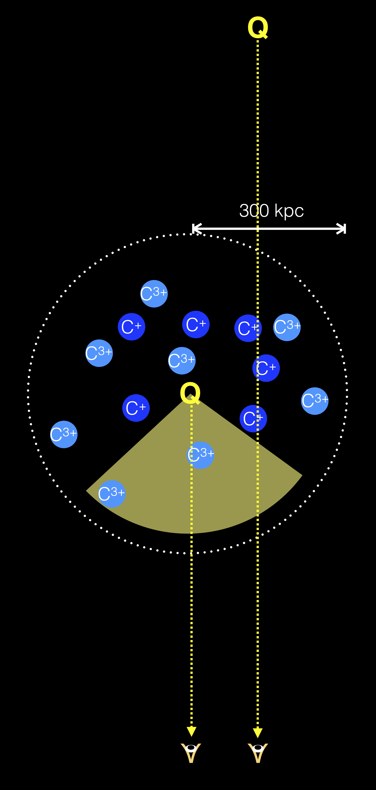
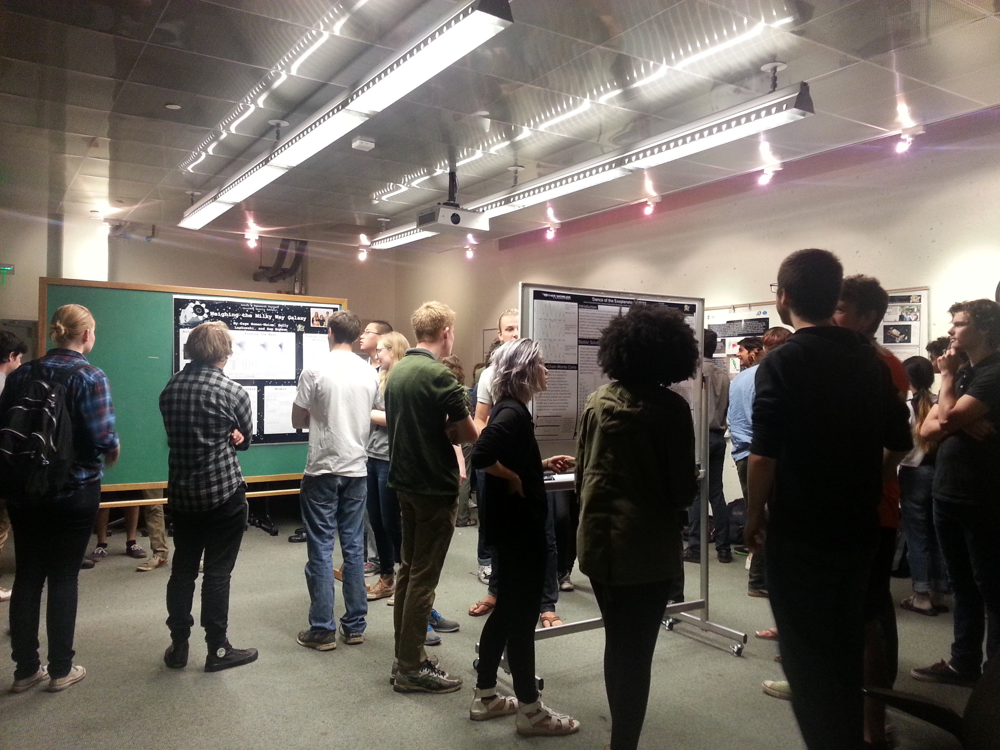

I am a postdoctoral scholar in Physics & Astronomy at the University of California, Riverside, under the supervision of Prof. Fred Hamann. Before that, I was an interim postdoctoral scholar in Astronomy at UC Santa Cruz, under the supervision of Prof. Piero Madau and Prof. Alexie Leauthaud.
I obtained my Doctor of Philosophy from UC Santa Cruz in 2017. My thesis advisor is Prof. J. Xavier Prochaska.
I obtained my Master of Science from UC Santa Cruz in 2015. I obtained my Bachelor of Science in Physics from The Chinese University of Hong Kong in 2012.
My email addresses are wingyeel at ucr dot edu and lwymarie at gmail.
My mailing address is 900 University Ave, Physics & Astronomy, University of California, Riverside, CA 92521.
My office is in Pierce Hall, Room 2206.
I have a github presence.
My curriculum vitae is available here.
On the right you can find a business photo, a photo of myself at the Cassegrain cage of the Palomar 200-inch telescope, and a photo of myself outside the Lick Observatory Shane telescope dome.
This information may be useful for your searches and citations. My first name is "Marie Wingyee" and my last name is "Lau." I gave myself this name in Grade 7, with reason you can infer from my thesis' epigraph: To the brilliant scientist and human, whom I name myself after, who had said, "Nothing in life is to be feared. It is only to be understood. Now it's the time to understand more, so that we may fear less."
This homepage is last updated on January 10, 2021.
Extremely Dust-Reddened Quasars
Dust obscured quasars are believed to be in a young stage of quasar/galaxy evolution, where quasar feedback could be more important for driving blowouts and disrupting star formation in their host galaxies. Recently a remarkable population of luminous, extremely red quasars (ERQs), at redshifts 2 to 4, have been discovered in the Baryon Oscillation Spectroscopic Survey matched to Wide-field Infrared Survey Explorer data. ERQs are defined by extremely red colors across rest UV to mid-IR. They have a suite of extreme spectral properties that may all be related to exceptionally powerful quasar driven outflows.
I am a major contributor to the study of ERQs, together with Prof. Fred Hamann (UC Riverside), graduate student Mr. Jarred Gillette (UC Riverside), Prof. David Rupke (Rhodes College), Dr. Dominika Wylezalek (University of Heidelberg), Dr. Serena Perrotta (UC San Diego), and many other co-workers and friends. We are exploring them in optical, near-IR, and sub-mm wavelengths, with long-slit spectroscopy and integral field spectroscopy, to study their molecular, neutral, and ionized gas properties.
The figure below is adopted from Hamann et al. (2017). It shows median spectral energy distributions of different quasar populations selected using different color and brightness criteria. Extremely red quasars have a distinct spectral energy distribution. Unlike some other red quasars or Type II active galactic nuclei which are steep in the rest UV, ERQs are flat in the rest UV despite being extremely red from rest UV to mid-IR.
Extended Emission Around Extremely Red Quasars
We have performed wide field integral field spectroscopy on a statistical sample of them. The reddest ERQ of all is the pilot study of the sample. Dust obscuration acts as a natural coronagraph, allowing views of the innermost halo region. Remarkably, the extended line-emitting halo is kinematically quiet despite the extreme outflows observed down the barrel to the quasar. Comparing with normal blue quasars reveals only marginal differences in the size, morphology, and flux distribution of the extended line-emitting halos. These findings have implications for feedback and evolution. Further, our results imply that for studies of large blueshifts in quasar spectra, the halo redshifts are good indicators of the systemic redshifts.
The figure below shows an optimally extracted image of the Lyman-α halo surrounding the reddest ERQ, the velocity centroid map of the Lyman-α flux, and a velocity dispersion map of the Lyman-α flux. In each image a model of the quasar's point spread function has been subtracted. The cross symbol marks the position of the quasar and the diamond symbol marks the centroid of the nebula.


This work is to be submitted to a journal shortly.
If you want to hear me talking, here is a video tutorial about quasar absorption line fitting. I gave it at the Kavli Institute for Theoretical Physics program of Fundamentals of Gaseous Halos.
The Quasars Probing Quasars Survey
I am a major contributor to (and largely concluded) the Quasars Probing Quasars survey, together with Prof. J. Xavier Prochaska (UC Santa Cruz), Prof. Joseph F. Hennawi (UC Santa Barbara), and Prof. Robert Simcoe (MIT). I maintain the homepage, which has instructions for downloading the public database (please do). QPQ is designed to examine gas related processes in the context of massive galaxy formation, as well as quasar feedback. The QPQ survey selects closely projected pairs from SDSS and other surveys. To date, the sample comprises 700 pairs to within 1 Mpc separation.
The figure on the right shows the experimental design of QPQ. Our line of sight to the background quasar is transverse to the foreground quasar, and intercepts its gaseous halo. Gas clumps transverse to the foreground quasar are largely un-illuminated by its ionizing radiation.
The figure below shows an example background-foreground quasar pair. In the background quasar spectrum we see strong Lyman-α and metal ion absorption coincident with the foreground quasar's redshift.

We found a high incidence of HI and CIV absorption in excess to IGM average, out to 1 Mpc transverse distance from the foreground quasars. We found the velocity widths measured in absorption exceed previous measurements of any galaxy populations.
I also contribute to Python codes for quasar pair spectral analysis.
Quasars Probing Quasars. VIII. The Physical Properties of the Cool Circumgalactic Medium Surrounding z ~ 2-3 Massive Galaxies Hosting Quasars
We characterize the physical properties of the cool T ≈104 K circumgalactic medium surrounding z ~ 2-3 quasar host galaxies, which are predicted to evolve into present day massive ellipticals. Using a statistical sample of 14 quasar pairs with projected separation < 300 kpc and spectra of high dispersion and high signal-to-noise ratio, we find extreme kinematics with low metal ion lines typically spanning 500 km/s, exceeding any previously studied galactic population. The CGM is significantly enriched, even beyond the virial radius, with a median metallicity [M/H] = -0.6. The α/Fe abundance ratio is enhanced, suggesting that halo gas is primarily enriched by core-collapse supernovae. The projected cool gas mass within the virial radius is estimated to be 1.9×1011 M⊙ (R⊥/160 kpc)2, accounting for 1/3 of the baryonic budget of the galaxy halo. The ionization state of CGM gas increases with projected distance from the foreground quasars, contrary to expectation if the quasar dominates the ionizing radiation flux. However, we also found peculiarities not exhibited in the CGM of other galaxy populations. In one absorption system, we may be detecting unresolved fluorescent Lyman-α emission. Such anomaly suggest that transverse sightlines are—at least in some cases—possibly illuminated. We also discovered a peculiar case where detection of the CII* fine-structure line implies an electron density >100 cm-3 and sub-parsec-scale gas clumps.
The figure below shows the cumulative mass profiles of total H and metals in the cool CGM. We constructed them using the median NH and the median [M/H] within 200 kpc.

The work is published in The Astrophysical Journal Supplement Series, Volume 226, Issue 2, article id. 25 (2016).
Quasars Probing Quasars. IX. The Kinematics of the Circumgalactic Medium Surrounding z ~ 2 Quasars
We examine the kinematics of the gas in the environments of galaxies hosting quasars at z ∼ 2. We employ 148 projected quasar pairs to study the circumgalactic gas of the foreground quasars in absorption. The sample selects foreground quasars with precise redshift measurements, using emission-lines with precision <= 300 km/s and average offsets from the systemic redshift <= |300 km/s|. We stack the background quasar spectra at the foreground quasar's systemic redshift to study the mean absorption in CII, CIV, and MgII. We find that the mean absorptions exhibit large velocity widths σv ≈300 km/s. Further, we find that the mean absorptions appear to be asymmetric about the systemic redshifts. The mean absorption centroids exhibit small redshift relative to the systemic δv = +200 km/s, with large intrinsic scatter in the centroid velocities of the individual absorption systems. We find the observed widths are consistent with gas in gravitational motion and Hubble flow. However, while the observation of large widths alone does not require galactic-scale outflows, the observed offsets suggest that the gas is on average outflowing from the galaxy. The observed offsets also suggest that the ionizing radiation from the foreground quasars is anisotropic and/or intermittent.
The figure below shows the mean absorption centered at CII 1334, CIV 1548, and MgII 2796 of the foreground quasars. Gaussian fits are overplotted. For the doublets, a second Gaussian with a fixed mean separation and a tied standard deviation is included in the fits. The blue dashed lines mark the absorption centroids while the gray dashed lines mark the systemic velocities.

The work is published in The Astrophysical Journal. Volume 857, Issue 2, article id. 126 (2018).
Other than Quasars Probing Quasars, I am interested in the following.
Surface Abundance Variations of Red Giants in Globular Clusters
The formation and evolution of galaxies can be probed via two techniques. First is through lookback studies, where one observes statistically the progenitors of present day galaxies at high redshifts. Second is through studying present-day properties of galaxies, including their stellar populations, to learn about their past evolution. For high-redshift gas, kinematics is easily measured, as in QPQ, however chemical abundances require ionization modeling. For stars, although they have lost the kinematics information at when they formed, chemical abundances can be easily measured. The two techniques are thus complementary. Milky Way globular clusters have metallicities lower than the systems studied in QPQ, hence the stellar archeology approach using them pushes even further back in redshift. Although globular clusters are often used as fossil records, one must note they are not chemically homogeneous.
In this project we study red giants in 27 Milky Way globular clusters. We test against the hypothesis that the surface abundance variations entirely come from pre-enriched gas, as opposed to evolutionary effects of the observed stars themselves. We found that, other than the prototype Messier 13 (Johnson & Pilachowski 2012), NGC 6388 also shows significant anti-correlation between the [O/Fe] ratio and stellar luminosity. Eight globular clusters show significant anticorrelation between [Na/Fe] and stellar luminosity. Since the stars formed at about the same age, a dependence on luminosity translates to stellar evolution. Bimodality possibly exists in [Na/Fe] distribution of several globular clusters. We have further observed oxygen-poor red giants in Messier 13 with Shane/Kast for the CN absorption band, to investigate correlation patterns with Na and O.
The figure below shows surface [O/Fe] and [Na/Fe] for red giants in NGC 104. [Na/Fe] shows a positive dependence on stellar luminosity.
I work with Prof. Graeme Smith (UC Santa Cruz) for this project. Please ask me for a report written by my interns on the archival data. Analysis of the new Shane/Kast data is ongoing.
Hydrodynamic Simulations of Quenching of Central versus Satellite Galaxies at z ~ 0.1
With Prof. Peng Oh (UC Santa Barbara) and Prof. Kristian Finlator (New Mexico State University), we use hydrodynamic simulations to test whether the properties of satellite galaxies are sensitive to models for quenching star formation in central galaxies. We evaluate the success of a simple halo quenching model in reproducing the observed dependence of quenched fractions of central and satellite galaxies on stellar mass and halo mass, as well as the observed stellar content in halos of different masses.
The figure below shows the fraction of galaxies that are satellites as a function of stellar mass. The solid blue curve is computed from an SDSS-GALEX matched sample at z ~ 0.1 obtained from Kimm et al. (2009). The dashed blue curve is the satllite fractions computed from our simulation outputs without halo quenching. The solid cyan curve is from the simulation outputs with halo quenching.

Please ask me for a write-up for this work.
Observing AGN Feedback Down-the-barrel Using Associated Absorbers at z <~ 1.5 (HST Cycle 25, ID 15034)
Observations have shown a high incidence of highly ionized absorbers within several thousand km/s of the emission redshift of AGNs, which are termed narrow associated absorption line systems (NAALs). On the other hand, QPQ observations of gas surrounding quasar-host galaxies in comparison to NAALs on circumgalactic scales have found anisotropic ionizing radiation, which may translate to anisotropy in AGN feedback. While z >~ 2 NAALs have been extensively surveyed in optical datasets, analyses at z <~ 1.5 have been limited to small samples with underutilized observational constraints.
We propose an exhaustive, archival search of HI, CIV, NV, OVI narrow absorbers at velocity separation > -10000 km/s from the systemic redshift in z <~ 1.5 AGNs. Our goal is to examine their physical conditions and statistical properties, using a sample of unprecedented size. We will assess their kinematics, chemical abundances, ionization states, and distances to the host AGN. We will assess correlation patterns among properties of NAALs and AGN luminosity. We will compare the line-of-sight circumgalactic medium to QPQ results to assess AGN feedback. In contrast to the high-z universe, AGNs at z <~ 1.5 have more precisely measured systemic redshifts, which will enable us to search for signs of coherent outflows and infalling gas, and separately analyze possible inflows for the first time. Moreover, the lower intergalactic opacity will allow much higher sensitivity to the far and extreme UV diagnostics.
We will release a database of UV spectra cross-matched with optical spectra of the same AGNs, with improved continuum fits and identifications of associated absorption lines. It will be distributed as part of igmspec.
The figure below shows the experimental setup. The sightline to an AGN probes gas intrinsic to the AGN, as well as gas on galactic and circumgalactic scales. I propose to test the hypothesis that these absorbers are ionized and accelerated by the AGN.
My co-Is are Prof. Piero Madau (UC Santa Cruz), Prof. J. Xavier Prochaska (UC Santa Cruz), Prof. Joseph F. Hennawi (UC Santa Barbara), Dr. Nicolas Tejos (Pontifical Catholic University of Chile), and Dr. Serena Perrotta (UC San Diego).
In addition, I have been a service observer and data reductionist for a wide range of research topics. Topics include dusty absorbers toward quasars, AGN reverberation mapping campaigns, spectroscopic redshifts for elliptical galaxies, and many others. I have observing experience in optical and near IR wavelengths, in long-slit spectroscopy, adaptive optics imaging, and integral field modes.
A list of my publications is available here.
I led Mr. Greg Sallaberry on his undergraduate senior thesis at UC Santa Cruz, who is now a master student at Leiden University. The work is partially sponsored by the STEM diversity program LAMAT, meaning star in Mayan. We work together on acquiring spectroscopic redshifts for massive elliptical galaxies using the Lick Observatory Shane 3-m telescope/Kast spectrograph. We then measure the satellite fractions at the highest stellar masses. Below is a photo of Mr. Sallaberry presenting his excellent poster.

I have TA-ed the California State Summer School for Mathematics and Science (COSMOS) of UC Santa Cruz, over two summers. I led high school students on pre-scripted astronomy projects. The projects included eclipsing binaries, galactic rotation and redshift, color-magnitude diagram, color-color diagrams, and the mass-metallicity relation of galaxies. We also observed pretty objects with the Lick Observatory Nickel 1-m telescope. Below is a card designed by my students.

I have advised three high school interns under the Science Internship Program (SIP) of UC Santa Cruz, over two summers. We carried out a research project on the surface compositions of red giant stars in globular clusters. I led them through the Siemens Competition in Math, Science & Technology. Below is a photo of my interns presenting the project.

I have worked as a Teaching Assistant for eight different undergraduate astronomy and physics classes, under seven different instructors. My teaching philosophy is that, non-Western contributions in the history of science should be introduced to students.
I TA-ed a class for introductory research experience for first-year and transfer students. I helped organize their research project groups and cooperative homework labs. Below is a photo of the final poster fair.
I have given private tutorials to low income children in Hong Kong. I taught Mathematics and English (as a second language).
Prior to beginning a career in Astronomy, I participated in short research projects in various physical science disciplines.
- I worked on Climate Change Sensitivity Evaluation from AIRS and IRIS Measurements, with Prof. Yuk L. Yung in Caltech. I compared spectral data from two spaceborne instruments IRIS and AIRS that recorded Earth's outgoing radiation, which operated in 1970 and 2007 respectively. I then extracted greenhouse gas signals. The project resulted in an SPIE proceedings article.
- I worked on Determining Cloud Base and Thickness from Spaceborne Stereoscopic
Imaging and Lidar Profiling Techniques, with Dr. Dong Wu in Jet Propulsion
Laboratory. I retrieved vertical structures of clouds from stereoscopic images taken by
the spaceborne instrument MISR. I validated the results against ground based measurement
data. The results were published in the
Caltech Undergraduate
Research Journal.

- I studied The Occurrence of High Winds and Severe Gusts during the Onset of Northeast Monsoon in Hong Kong, in the Hong Kong Observatory. I found that there is no correlation between a rapid rate of change in atmospheric pressure gradient and the subsequent arrival of gusts at surface. The study is completed. Please contact me for a project report.
- I studied Mechanical Vibration of Thin Plates for my senior thesis, with Prof. Kenneth Young in The Chinese University of Hong Kong. Our approach is mathematical with no physical assumptions. The formulation through a power series expansion in wavenumber can be developed to high orders. Please contact me for a project report. A related publication can be found here.
In addition to science, I also enjoy animals, writing, and connecting people behind a computer screen.
I care about issues concerning academics with a humble background. I welcome colleagues to reach out to me for peer support.
I am an immigrant to America. Astronomy Picture of the Day has some images of my hometown: Unsual clouds over Hong Kong, Hong Kong sky, Eclipse city.